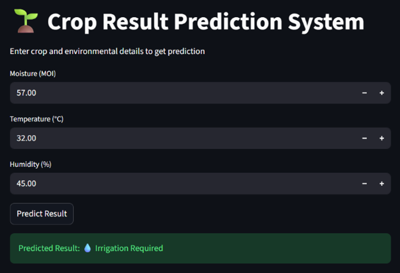
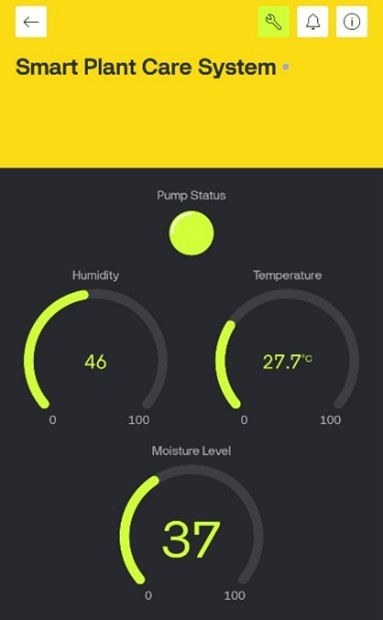
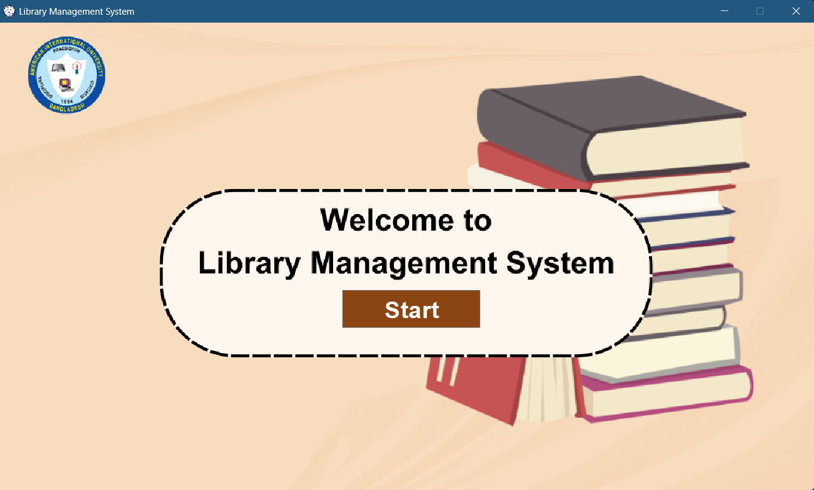
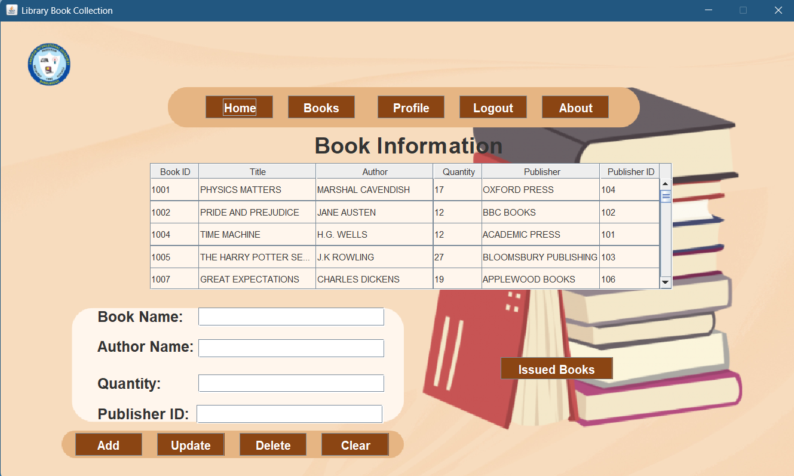
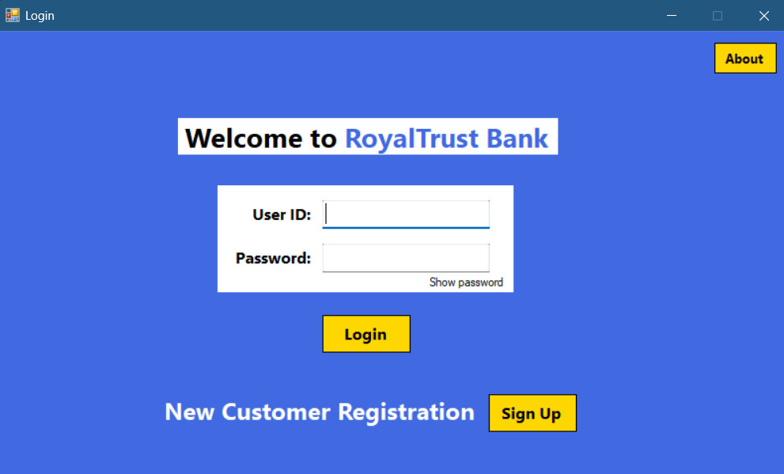
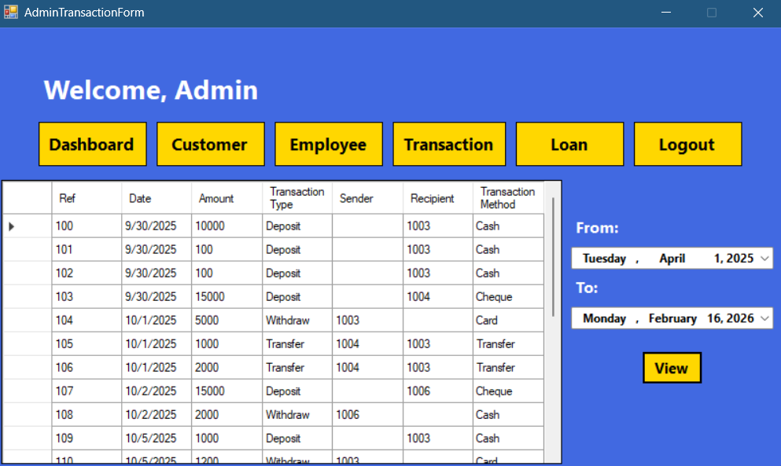

Featured Projects
Smart Water Irrigation System


Project Overview: Machine Learning pipeline for agricultural optimization using real-time sensor inputs.
- Predicts irrigation requirements
- Determines crop suitability
- Integrates hardware sensors with ML
Tech Stack: Python, Scikit-learn, Pandas, Streamlit
Library Management System



Project Overview: Java desktop application with Swing GUI and MySQL backend.
- Full CRUD operations
- Book issuance and return tracking
- Publisher management module
Tech Stack: Java, Swing, MySQL
Banking Management System



Project Overview: C# Windows Forms banking simulation with role-based authentication.
- Role-based login
- Secure transactions
- Loan approval system
Tech Stack: C#, .NET Framework, SQL Server